The Joy of a Teacher is the Success of his Students.
I greet you this day,
These are the solutions to the Enhanced American College Testing (Enhanced ACT) Mathematics Tests.
If you find these resources valuable and if any of these resources were helpful in your passing the
the test, please consider making a donation:
Cash App: $ExamsSuccess or
cash.app/ExamsSuccess
PayPal: @ExamsSuccess or
PayPal.me/ExamsSuccess
Venmo: @ExamsSuccess or
Venmo.com/u/ExamsSuccess
Your donation is appreciated.
Comments, ideas, areas of improvement, questions, and constructive criticisms are welcome.
Feel free to contact me. Please be positive in your message.
I wish you the best.
Thank you.
DIRECTIONS: Solve each problem, choose the correct answer, and then fill in the corresponding oval on your
answer document.
Do not linger over problems that take too much time.
Solve as many as you can; then return to the others in the time you have left for this test.
You are permitted to use a calculator on this test. You may use your calculator for any problems you choose, but
some of the problems may best be done without using a calculator.
Note: Unless otherwise stated, all of the following should be assumed.
(1.) Illustrative figures are not necessarily drawn to scale.
(2.) Geometric figures lie in a plane.
(3.) The word "line" indicates a straight line.
(4.) The word "average" indicates arithmetic mean.
| LHS | RHS |
|---|---|
| $ \sqrt{x} - 9 \\[3ex] \sqrt{289} - 9 \\[3ex] 17 - 9 \\[3ex] 8 $ | $8$ |
| LHS | RHS |
|---|---|
|
$
z^2 \\[3ex]
(3i)^2 \\[3ex]
3^2 \cdot i^2 \\[3ex]
9i^2 \\[3ex]
9(-1) \\[3ex]
-9
$
$ (-3i)^2 \\[3ex] (-3)^2 \cdot i^2 \\[3ex] 9i^2 \\[3ex] 9(-1) \\[3ex] -9 $ |
$-9$ |
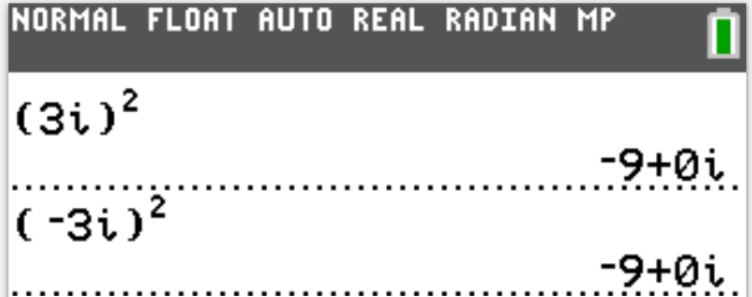
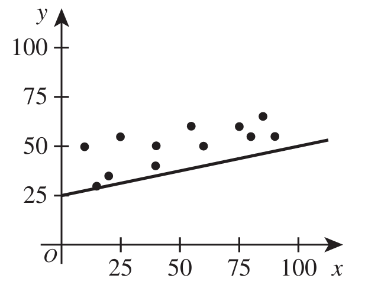
| Engine size (L) | Weight (kg) |
| 2.0 | 1,041 |
| 4.3 | 2,021 |
| 3.4 | 1,670 |
| 2.8 | 1,547 |
| 4.0 | 1,754 |
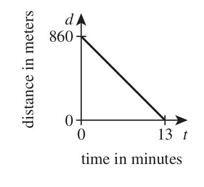
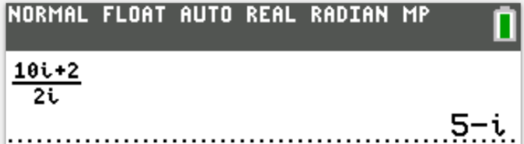
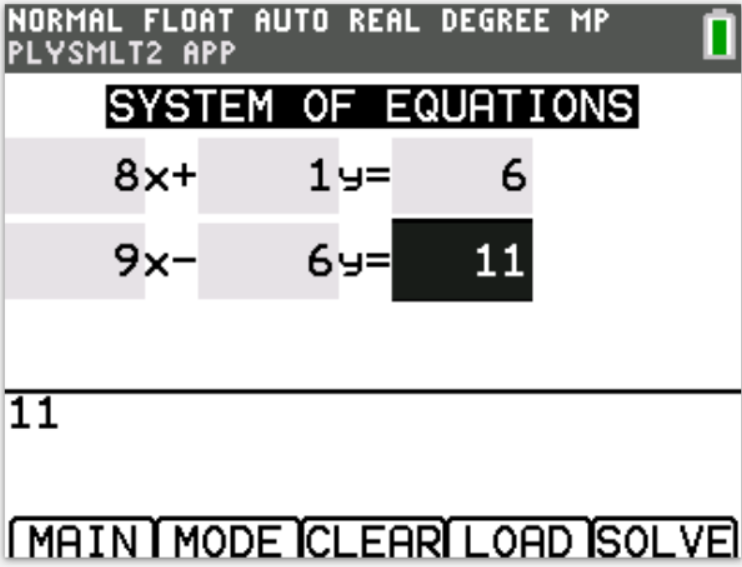
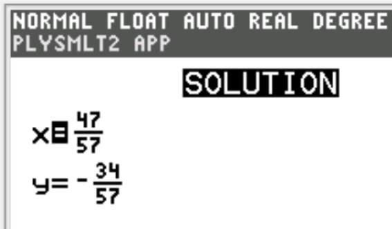
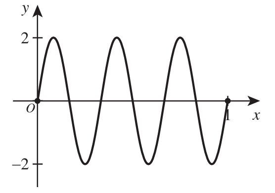
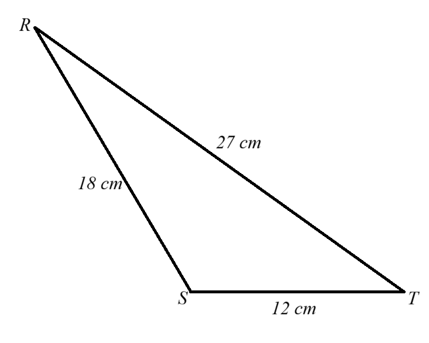
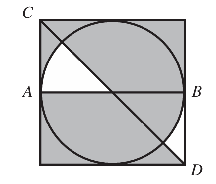
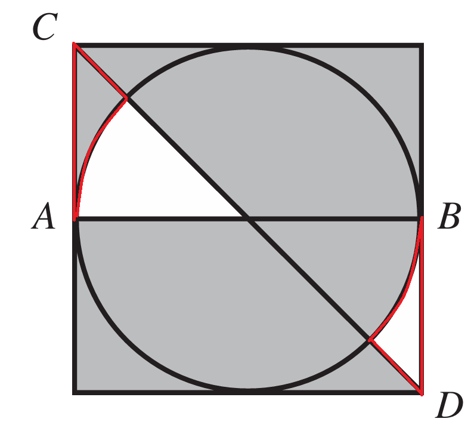
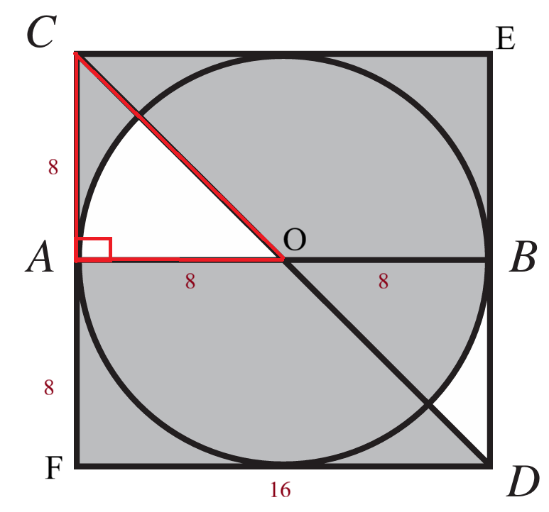
| Revenue | Probability |
| $400 | 0.02 |
| $100 | 0.02 |
| $60 | 0.04 |
| $0 | 0.92 |
| Revenue, $x$ | $P(x)$ | $x \cdot P(x)$ |
|---|---|---|
| $400 | 0.02 | 8 |
| $100 | 0.02 | 2 |
| $60 | 0.04 | 2.4 |
| $0 | 0.92 | 0 |
| $\Sigma [x \cdot P(x)] = 12.4$ | ||
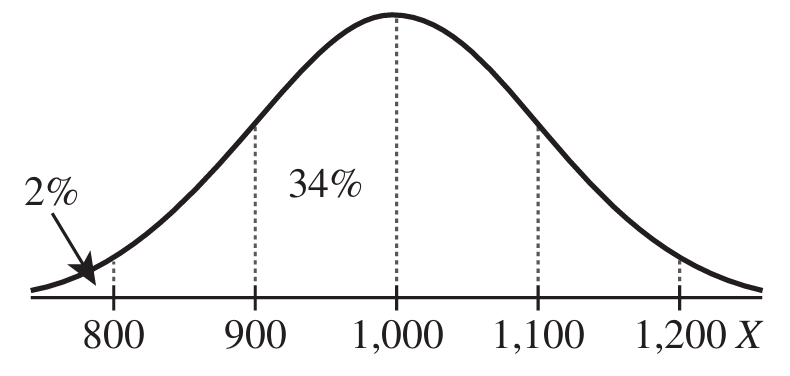
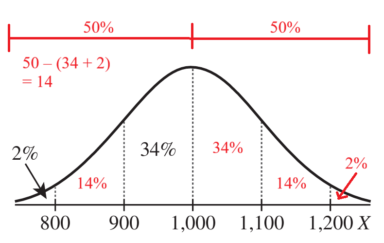
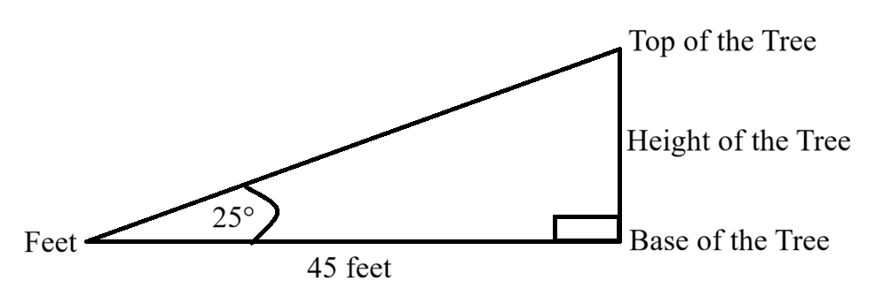
| Time, t (hours) | Approximate Concentration $(mg/L)$ |
|---|---|
| 0 | 6 |
| 6 | 151 |
| 12 | 27 |
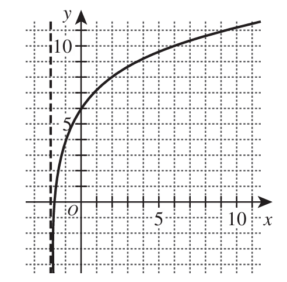
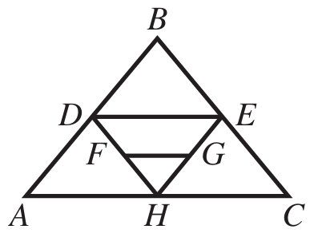
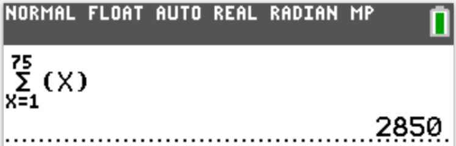